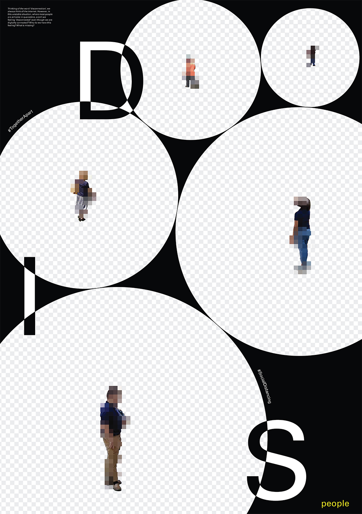

Mengjie
Liu
About
Contact
Disconnected
Next Project
series posters, 2020

Thinking of the word “disconnected,” we think of the internet. However, when most people are at home in quarantine, aren’t we feeling disconnected even though we are digitally connected? Why do we have this feeling? What is missing?